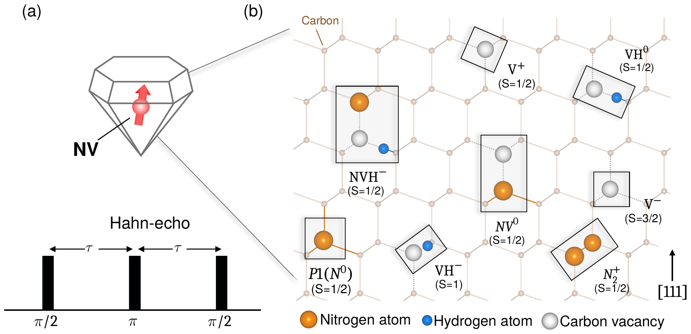

Abstract
- 1Department of Quantum Information Engineering, Sungkyunkwan University, Suwon, Gyeonggi, Republic of Korea
Spin qubits in solids, such as the nitrogen-vacancy (NV) center in diamond, are leading platforms for quantum sensing and quantum networks. Their performance is limited by decoherence: the qubit loses quantum information through magnetic interactions with surrounding defects and impurities that form a fluctuating “spin bath.” Understanding which defects cause decoherence, and how, is key to engineering better quantum materials. Our group develops theoretical and computational approaches to quantum materials and solid-state qubits, combining first-principles electronic-structure calculations, quantum many-body spin-dynamics simulations, and close comparison with experiment to predict defect properties and qubit coherence from the atomic scale. In this talk, I will present a predictive framework for decoherence of NV ensembles in diamond (Fig. 1) [1]. Instead of approximating real defect populations as a single homogeneous bath, we build defect-resolved spin Hamiltonians for nitrogen-, vacancy-, and hydrogen-related defects. We find that coherence depends not only on defect density but also on defect identity and bath composition: mixed defect populations can suppress or enhance decoherence. Our calculations reproduce magnetic-field-dependent Hahn-echo measurements across defect concentrations and identify vacancy-related defects as critical contributors beyond the conventional nitrogen (P1) bath. I will close by discussing opportunities for SKKU–Rice collaboration on qubit materials, defect engineering, and quantum sensing.

- H. Park, H. Jeong, H. Kim, C. Findler, F. Jelezko, S. Oh, J. Lee, G. Galli, H. Seo, npj Comp. Mater., in press (2026).